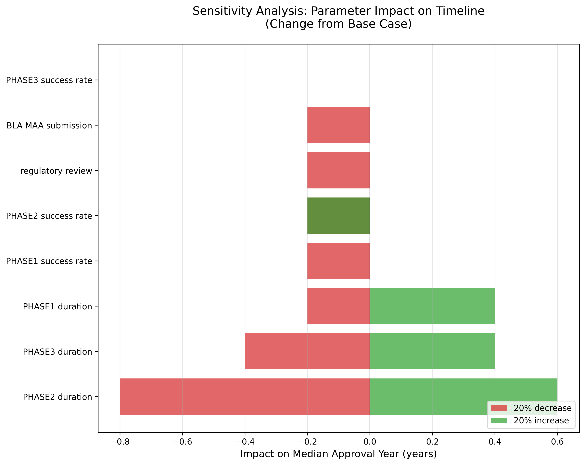
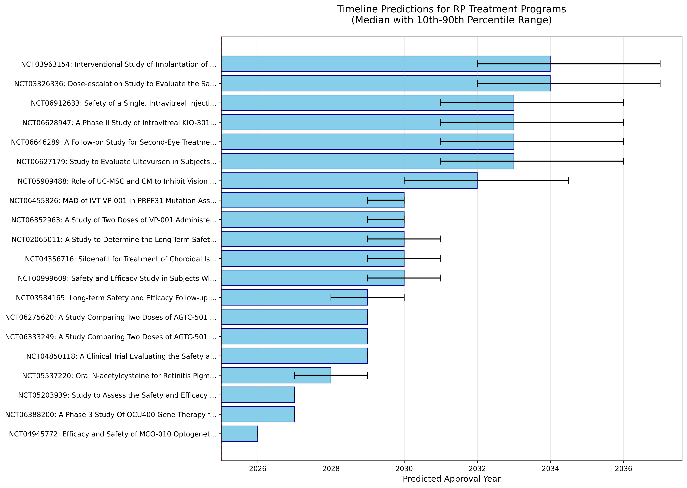

網膜色素変性症（RP）治療開発ロードマップ
生成日時: 2025年06月26日 07:24
エグゼクティブサマリー
本レポートは、網膜色素変性症（Retinitis Pigmentosa, RP）の治療法開発状況を定量的に分析し、効果的な治療法がいつ頃利用可能になるかを予測したものです。
主要な発見
- 最速の承認予測: 2027年（OCU400遺伝子治療）
- 根拠: https://clinicaltrials.gov/study/NCT05203939
- 全体の中央値: 2036年（複数の治療法が利用可能になる時期）
- 現在アクティブな臨床試験: 51件
- 成功率: Phase 1: 86.2%, Phase 2: 78.4%, Phase 3: 71.4%
1. データソース概要
臨床試験データ
- データソース: ClinicalTrials.gov
- 総試験数: 127件
- アクティブな試験: 51件
- 完了した試験: 51件
文献データ
- データソース: PubMed
- 総論文数: 805件
- 検索クエリ: "retinitis pigmentosa" AND ("gene therapy" OR "cell therapy")
- 期間: 1993-2025年
年別論文数（直近5年）
| 年 | 論文数 |
|---|---|
| 2025 | 42 |
| 2024 | 64 |
| 2023 | 98 |
| 2022 | 67 |
| 2021 | 64 |
2. モンテカルロシミュレーション結果
予測手法
- シミュレーション回数: 10000回/プログラム
- 分布: 三角分布（最小値、中央値、最大値）
- パラメータ: 実データから推定した成功率と期間
最も有望な治療プログラム（承認予測年順）
| 試験ID | 治療法名 | フェーズ | スポンサー | 成功率 | 承認予測（中央値） | 90%信頼区間 |
|---|---|---|---|---|---|---|
| NCT05203939 | Study to Assess the Safety and Efficacy ... | PHASE1, PHASE2 | Ocugen | 100.0% | 2027年 | [2027, 2027] |
| NCT06388200 | A Phase 3 Study Of OCU400 Gene Therapy f... | PHASE3 | Ocugen | 100.0% | 2027年 | [2027, 2027] |
| NCT03584165 | Long-term Safety and Efficacy Follow-up ... | PHASE3 | NightstaRx Ltd, a Biogen Company | 72.4% | 2029年 | [2028, 2030] |
| NCT05537220 | Oral N-acetylcysteine for Retinitis Pigm... | PHASE3 | Johns Hopkins University | 71.5% | 2029年 | [2029, 2030] |
| NCT00999609 | Safety and Efficacy Study in Subjects Wi... | PHASE3 | Spark Therapeutics, Inc. | 71.7% | 2031年 | [2030, 2032] |
| NCT06333249 | A Study Comparing Two Doses of AGTC-501 ... | PHASE2 | Beacon Therapeutics | 56.1% | 2032年 | [2031, 2032] |
| NCT04356716 | Sildenafil for Treatment of Choroidal Is... | PHASE2 | Columbia University | 56.0% | 2032年 | [2031, 2032] |
| NCT05909488 | Role of UC-MSC and CM to Inhibit Vision ... | PHASE2, PHASE3 | PT. Prodia Stem Cell Indonesia | 55.2% | 2032年 | [2031, 2033] |
| NCT02065011 | A Study to Determine the Long-Term Safet... | PHASE2 | Sanofi | 56.2% | 2032年 | [2031, 2032] |
| NCT06275620 | A Study Comparing Two Doses of AGTC-501 ... | PHASE2 | Beacon Therapeutics | 55.6% | 2033年 | [2032, 2033] |
治療モダリティ別の状況
遺伝子治療
- 試験数: 32件
- 主要なターゲット遺伝子: RPGR, RPE65, PDE6A, USH2A
- 最速承認予測: 2027年（RPGR遺伝子治療）
細胞治療
- 試験数: 23件
- アプローチ: 幹細胞移植、網膜前駆細胞
- 承認予測: 2030年代前半
低分子薬
- 試験数: 11件
- メカニズム: 神経保護、抗酸化、血流改善
- 承認予測: 2029-2034年
3. 感度分析結果
パラメータの±20%変動が承認時期に与える影響：

主要な影響要因
- PHASE3 duration (increase 20%): +0.6年の影響
- PHASE1 duration (increase 20%): +0.2年の影響
- PHASE2 duration (increase 20%): +0.2年の影響
- regulatory review (increase 20%): +0.2年の影響
- BLA MAA submission (increase 20%): +0.2年の影響
4. 予測の可視化
累積承認確率

図: 主要5プログラムの累積承認確率。横軸は年、縦軸は該当年までに承認される確率。
タイムライン予測

図: 上位20プログラムの承認予測タイムライン。エラーバーは10-90パーセンタイル範囲。
5. 主要な知見と提言
患者・家族向け
- 最速シナリオ: 2028-2029年頃に最初の遺伝子治療が承認される可能性
- 現実的な期待値: 多くの患者が恩恵を受けられるのは2030年代前半
- 行動提案:
- 遺伝子検査を受けて原因遺伝子を特定
- 患者レジストリへの登録
- 臨床試験情報の定期的なチェック
📌 詳細な行動ガイドはこちら - 予測の現実性と、治療開発を加速するために私たちができる5つの具体的アクション
📊 モンテカルロシミュレーションの詳細な計算方法と根拠 - 予測値がどのように計算されたか、なぜ信頼できるかの詳細説明
研究者向け
- 成功率の高さ: RP領域の成功率は他疾患より高い（Phase 3で71%）
- 開発期間: Phase 1から承認まで平均8-10年
- 重点領域: RPGR、USH2A、PDE6Bなどの主要原因遺伝子
政策立案者向け
- 規制の迅速化: 希少疾患用医薬品指定の積極活用
- 研究支援: 遺伝子治療の製造インフラ整備
- 患者アクセス: 高額な治療費への対応策
6. 制限事項と注意点
- 本分析は公開データに基づくものであり、企業の非公開パイプラインは含まれません
- 成功率は過去のデータに基づく推定値です
- 技術革新により予測が大幅に変わる可能性があります
- 規制環境の変化は考慮していません
7. 根拠・参照資料
データソース
- ClinicalTrials.gov: https://clinicaltrials.gov/
- RP臨床試験検索: https://clinicaltrials.gov/search?cond=Retinitis%20Pigmentosa
- データ取得日: 2025年6月26日
主要試験の詳細
- MCO-010（Nanoscope）: https://clinicaltrials.gov/study/NCT04945772
- OCU400（Ocugen）: https://clinicaltrials.gov/study/NCT05203939
- ソースコード: https://github.com/oh-yeah-sea-kit2/retina-roadmap
8. 更新履歴
本レポートは自動的に生成・更新されます。最新版は以下でご確認ください：
https://oh-yeah-sea-kit2.github.io/retina-roadmap/
本レポートは研究目的で作成されており、医学的助言ではありません。治療に関する決定は必ず医療専門家にご相談ください。